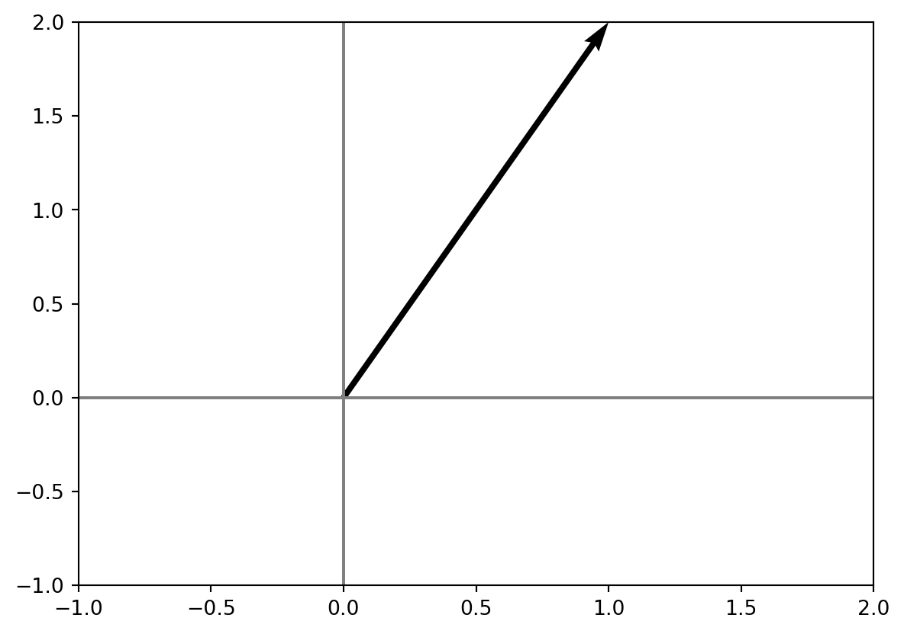
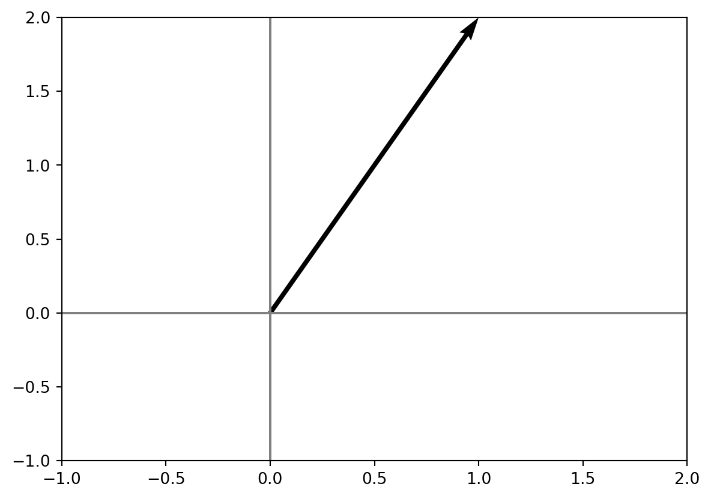
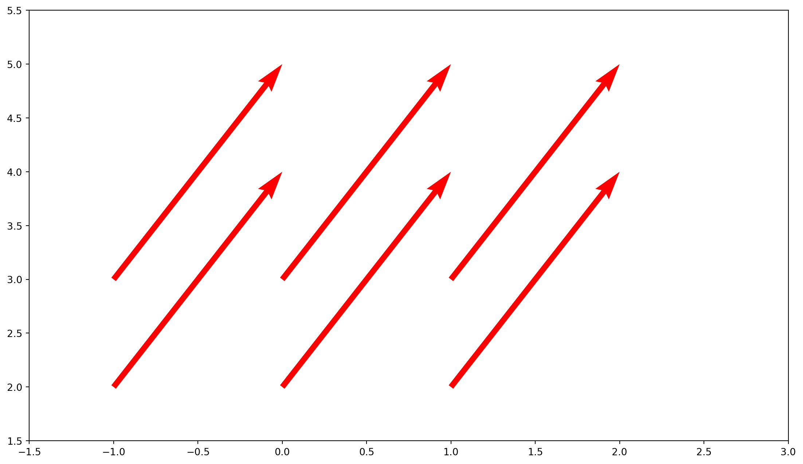
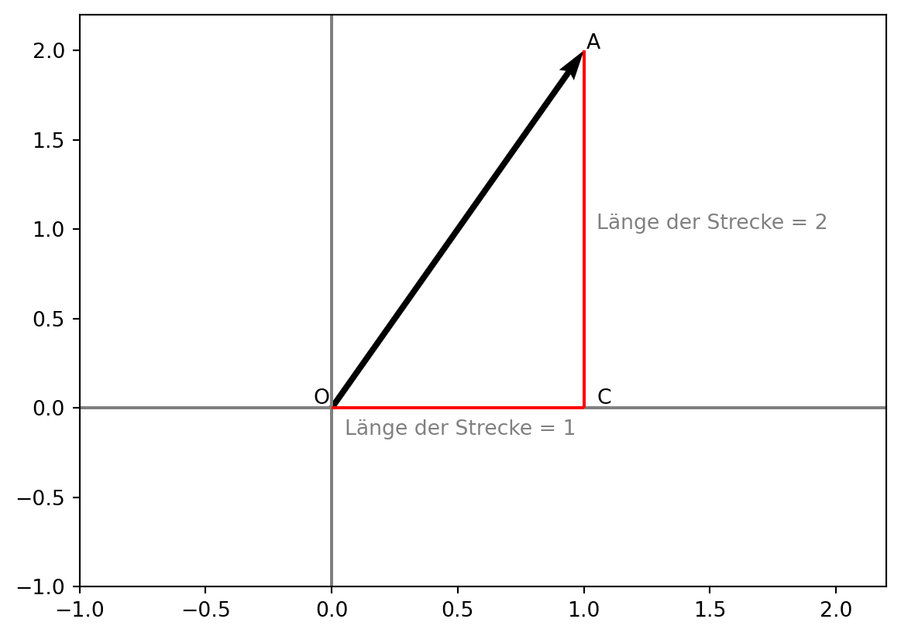
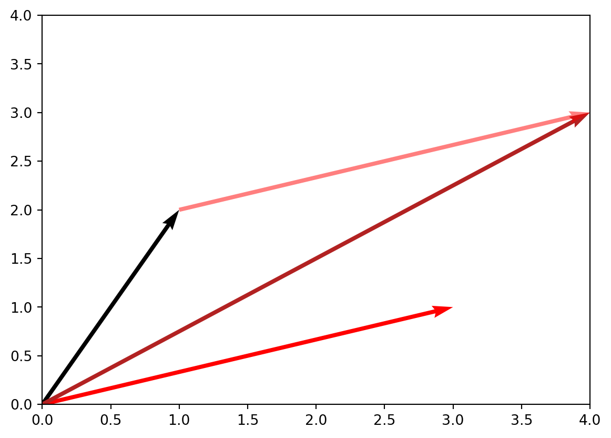
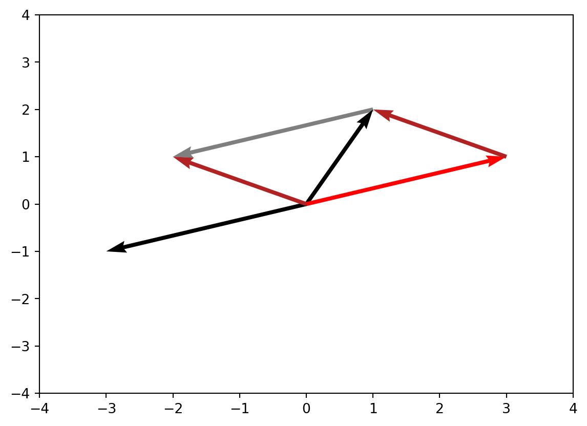
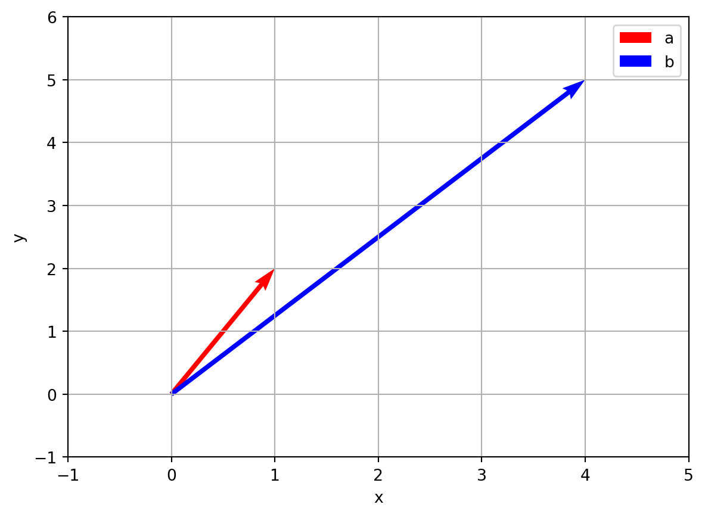
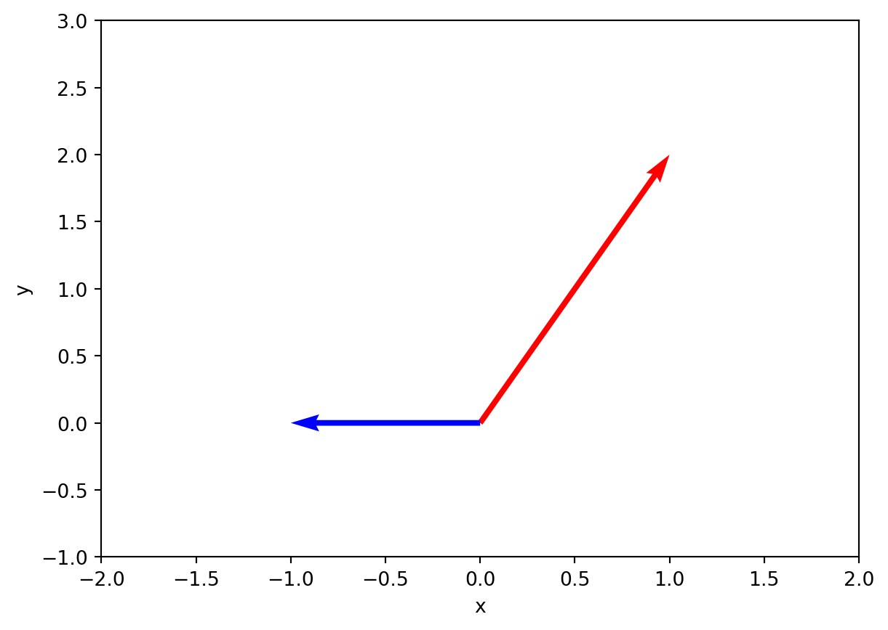
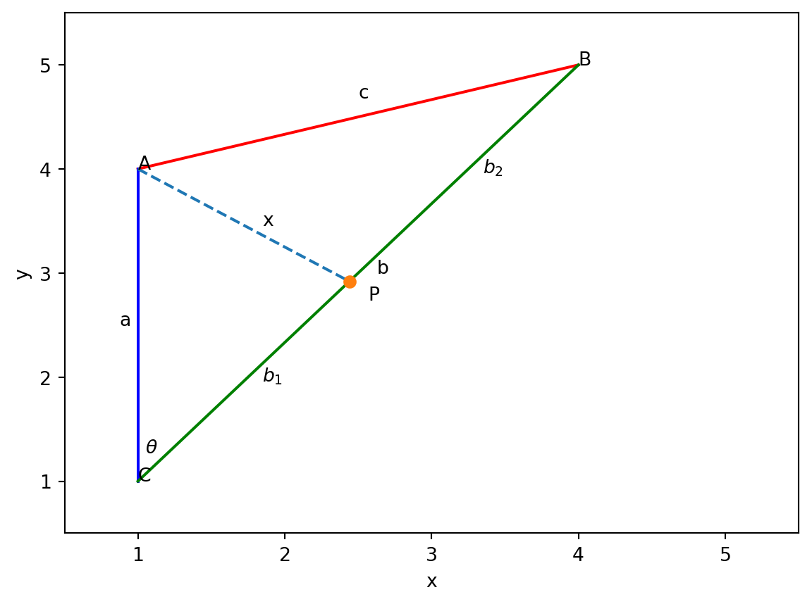

import numpy as np
import matplotlib.pyplot as plt
fix, ax = plt.subplots()
ax.quiver(0, 0, 1, 2, angles='xy', scale_units='xy', scale=1)
ax.axvline(x=0, color='gray')
ax.axhline(y=0, color='gray')
ax.set_xlim(-1, 2)
ax.set_ylim(-1, 2)
In der Geometrie sind werden (endliche) Sequenzen von realen Zahlen Vektoren genannt. Wir schreiben Vektoren in der Regel als Spaltenvektoren, also als n \times 1-Matrizen. Ein Vektor v mit n Einträgen wird also geschrieben als
v = \begin{pmatrix} v_1 \\ v_2 \\ \vdots \\ v_n \end{pmatrix}
wobei v_1, v_2, \ldots, v_n die Elemente des Vektors sind.
Beispiele für zwei-dimensionale Vektoren sind
\begin{pmatrix} 1 \\ 2 \end{pmatrix}, \quad \begin{pmatrix} 0 \\ 0 \end{pmatrix}, \quad \begin{pmatrix} 1 \\ 0 \end{pmatrix}
Beispiele für drei-dimensionale Vektoren sind
\begin{pmatrix} 1 \\ 2 \\ 3 \end{pmatrix}, \quad \begin{pmatrix} 0 \\ 0 \\ 0 \end{pmatrix}, \quad \begin{pmatrix} 1 \\ 0 \\ 0 \end{pmatrix}
Wir können Vektoren grafisch als Pfeile darstellen. Der Vektor \begin{pmatrix} 1 \\ 2 \end{pmatrix} kann als ein Pfeil von (0, 0) nach (1, 2) dargestellt werden.
import numpy as np
import matplotlib.pyplot as plt
fix, ax = plt.subplots()
ax.quiver(0, 0, 1, 2, angles='xy', scale_units='xy', scale=1)
ax.axvline(x=0, color='gray')
ax.axhline(y=0, color='gray')
ax.set_xlim(-1, 2)
ax.set_ylim(-1, 2)
Obwohl wir üblicherweise Vektoren als Pfeile von (0, 0) zu einem anderen Punkt darstellen, enthalten Vektoren keine Information über ihren Ursprung. Sie liefern uns Information über ihre Richtung und über ihre Länge. Also können wir für den Vektor \begin{pmatrix} 1 \\ 2 \end{pmatrix} auch einen Pfeil von (2, 3) nach (3, 5) zeichnen.
# Creating arrow
x = np.array([-1, 0, 1])
y = np.array([2, 3])
X, Y = np.meshgrid(x, y)
# creating plot
fig, ax = plt.subplots(figsize =(14, 8))
ax.quiver(X, Y, 1, 2, angles='xy', scale_units='xy', scale=1, color='r')
ax.set_xlim(-1.5, 3)
ax.set_ylim(1.5, 5.5)
# show plot
plt.show()
Definition C.1 (Die Länge eines Vektors) Die Länge eines Vektors v = \begin{pmatrix} v_1 \\ v_2 \\ \vdots \\ v_n \end{pmatrix} ist definiert als
\|v\| = \sqrt{v_1^2 + v_2^2 + \ldots + v_n^2} = \sqrt{\sum_{i=1}^n v_i^2}
Wir können uns die Länge eines Vektors als die euklidische Distanz von dem Nullpunkt zu dem Punkt vorstellen, den der Vektor darstellt. Es ist einfacher, sich das in \mathbb{R}^2 vorzustellen, aber es gilt auch in höheren Dimensionen.
fix, ax = plt.subplots()
ax.quiver(0, 0, 1, 2, angles='xy', scale_units='xy', scale=1)
ax.axvline(x=0, color='gray')
ax.axhline(y=0, color='gray')
ax.set_xlim(-1, 2.2)
ax.set_ylim(-1, 2.2)
ax.vlines(x=1, ymin=0, ymax=2, color='r')
ax.annotate('Länge der Strecke = 2', (1.05, 1), fontsize=10, color='grey')
ax.hlines(y=0, xmin=0, xmax=1, color='r')
ax.annotate('Länge der Strecke = 1', (0.05, -0.15), fontsize=10, color='grey')
ax.annotate('A', (1.01, 2.01), fontsize=10, color='black')
ax.annotate('O', (0.01, 0.01), fontsize=10, color='black', textcoords="offset points", xytext=(-10,1))
ax.annotate('C', (1.01, 0.01), fontsize=10, color='black', textcoords="offset points", xytext=(5,1))Text(5, 1, 'C')
Die Länge der Strecke OB können wir über den Satz des Pythagoras berechnen.
|OA| = \sqrt{1^2 + 2^2} = \sqrt{5}
## Die Länge eines Vektors können wir wie folgt berechnen:
a = np.array([1, 2])
laenge = np.linalg.norm(a)
print(laenge)
print(np.isclose(laenge, np.sqrt(5)))2.23606797749979
TrueWir können zwei Vektoren miteinander addieren, indem wir ihre Elemente paarweise addieren. Wenn v = \begin{pmatrix} v_1 \\ v_2 \\ \vdots \\ v_n \end{pmatrix} und w = \begin{pmatrix} w_1 \\ w_2 \\ \vdots \\ w_n \end{pmatrix} zwei Vektoren sind, dann ist die Summe v + w definiert als
v + w = \begin{pmatrix} v_1 + w_1 \\ v_2 + w_2 \\ \vdots \\ v_n + w_n \end{pmatrix}
Es ist hilfreich, die Summe zweier Vektoren grafisch darzustellen. Wenn v = \begin{pmatrix} 1 \\ 2 \end{pmatrix} und w = \begin{pmatrix} 3 \\ 1 \end{pmatrix} sind, dann ist v + w = \begin{pmatrix} 4 \\ 3 \end{pmatrix}.
v = np.array([1, 2])
w = np.array([3, 1])
v_plus_w = v + w
print(v_plus_w)[4 3]fix, ax = plt.subplots()
ax.quiver(0, 0, v[0], v[1], angles='xy', scale_units='xy', scale=1)
ax.quiver(0, 0, w[0], w[1], angles='xy', scale_units='xy', scale=1, color='r')
ax.quiver(0, 0, v_plus_w[0], v_plus_w[1], angles='xy', scale_units='xy', scale=1, color='firebrick')
ax.quiver(v[0], v[1], w[0], w[1], angles='xy', scale_units='xy', scale=1, color='r', alpha=0.5)
ax.set_xlim(0, 4)
ax.set_ylim(0, 4)
Die Vektoren in der Geometrie können wir uns als Vorschriften vorstellen, wie wir uns von einem Punkt zu einem anderen bewegen. Wenn wir uns am Anfang im Punkt (0, 0) befinden, sagt und der Vektor v = \begin{pmatrix} 1 \\ 2 \end{pmatrix}, dass wir uns um eine Einheit nach rechts und um zwei Einheiten nach oben bewegen sollen. Der Vektor w = \begin{pmatrix} 3 \\ 1 \end{pmatrix} sagt uns, dass wir uns um drei Einheiten nach rechts und um eine Einheit nach oben bewegen sollen.
Die Summe der Vektoren sagt uns in einer kompakten Art und Weise, wie wir uns bewegen sollen, wenn wir zuerst die Vorschrift des Vektors v und dann die Vorschrift des Vektors w befolgen. Am Ende müssen wir uns um vier Einheiten nach rechts und um drei Einheiten nach oben bewegen.
Die Differenz von zwei Vektoren v und w ist definiert als v - w = v + (-w), wobei -w der Vektor ist, der durch Multiplikation von w mit -1 entsteht. Geometrisch ist -w der Vektor, der die gleiche Länge wie w hat, aber in die entgegengesetzte Richtung zeigt.
fig, ax = plt.subplots()
v_min_w = v - w
ax.quiver(0, 0, v[0], v[1], angles='xy', scale_units='xy', scale=1)
ax.quiver(0, 0, w[0], w[1], angles='xy', scale_units='xy', scale=1, color='r')
ax.quiver(0, 0, -w[0], -w[1], angles='xy', scale_units='xy', scale=1, color='black')
ax.quiver(v[0], v[1], -w[0], -w[1], angles='xy', scale_units='xy', scale=1, color='black', alpha=0.5)
ax.quiver(0, 0, v_min_w[0], v_min_w[1], angles='xy', scale_units='xy', scale=1, color='firebrick')
ax.quiver(w[0], w[1], v_min_w[0], v_min_w[1], angles='xy', scale_units='xy', scale=1, color='firebrick')
ax.set_xlim(-4, 4)
ax.set_ylim(-4, 4)
Ganz wie in den Überlegungen zur Addition von Vektoren, können wir die Differenz von zwei Vektoren auch als Vorschrift interpretieren, wie wir uns von einem Punkt zu einem anderen bewegen. Wenn wir uns am Anfang im Punkt (0, 0) befinden, sagt uns der Vektor v = \begin{pmatrix} 1 \\ 2 \end{pmatrix}, dass wir uns um eine Einheit nach rechts und um zwei Einheiten nach oben bewegen sollen. Der Vektor -w = \begin{pmatrix} -3 \\ -1 \end{pmatrix} sagt uns, dass wir uns um drei Einheiten nach links und um eine Einheit nach unten bewegen sollen.
Das Skalarprodukt ist eine Zahl, die uns Auskunft darüber gibt, wie ähnlich zwei Vektoren sind. Es wird auch als inneres Produkt bezeichnet. Das Skalarprodukt zweier Vektoren ist definiert als die Summe der Produkte der entsprechenden Komponenten der beiden Vektoren. Das Skalarprodukt wird mit einem Punkt dargestellt, z.B. \vec{a} \cdot \vec{b}.
Definition C.2 Das Skalarprodukt zweier Vektoren \vec{v} = \begin{pmatrix} v_1 \\ v_2 \\ \vdots \\ v_n \end{pmatrix} und \vec{w} = \begin{pmatrix} w_1 \\ w_2 \\ \vdots \\ w_n \end{pmatrix} ist definiert als
\vec{v} \cdot \vec{w} = v_1w_1 + v_2w_2 + \ldots + v_nw_n = \sum_{i=1}^n v_iw_i
Beispiel C.1 Es seien \vec{a} = (1, 2) \vec{b} = (4, 5) Dann ist das Skalarprodukt der beiden Vektoren:
\vec{a} \cdot \vec{b} = 1 \cdot 4 + 2 \cdot 5 = 4 + 10 = 14
import numpy as np
import matplotlib.pyplot as plt
a = np.array([1, 2])
b = np.array([4, 5])
print(np.dot(a, b))14fig, ax = plt.subplots()
plt.quiver(0, 0, a[0], a[1], angles='xy', scale_units='xy', scale=1, color='r', label='a')
plt.quiver(0, 0, b[0], b[1], angles='xy', scale_units='xy', scale=1, color='b', label='b')
plt.xlim(-1, 5)
plt.ylim(-1, 6)
plt.xlabel('x')
plt.ylabel('y')
angle = np.arccos(np.dot(a, b) / (np.linalg.norm(a) * np.linalg.norm(b)))
print(np.degrees(angle))
plt.legend()
plt.grid(True)12.094757077012119
Das Skalarprodukt ist positiv, wenn der Winkel zwischen den beiden Vektoren kleiner als 90 Grad ist (spitzer Winkel). Das Skalarprodukt ist negativ, wenn der Winkel zwischen den beiden Vektoren größer als 90 Grad ist (stumpfer Winkel).
a1 = np.array([1, 2])
a2 = np.array([-1, 0])
print(np.dot(a1, a2))-1fig, ax = plt.subplots()
ax.quiver(0, 0, a1[0], a1[1], angles='xy', scale_units='xy', scale=1, color='r', label='a1')
ax.quiver(0, 0, a2[0], a2[1], angles='xy', scale_units='xy', scale=1, color='b', label='a2')
ax.set_xlim(-2, 2)
ax.set_ylim(-1, 3)
ax.set_xlabel('x')
ax.set_ylabel('y')Text(0, 0.5, 'y')
Der Kosinussatz ist ein Satz aus der Geometrie, der die Länge einer Seite eines Dreiecks in Beziehung zu den Längen der anderen beiden Seiten und dem Winkel zwischen diesen Seiten setzt. Der Kosinussatz lautet:
c^2 = a^2 + b^2 - 2ab \cdot \cos(\theta)
wobei a, b und c die Längen der Seiten des Dreiecks sind und \gamma der Winkel zwischen den Seiten a und b ist.
Der Kosinussatz kann auch auf Vektoren angewendet werden. Das Skalarprodukt zweier Vektoren \vec{a} und \vec{b} ist definiert als:
\vec{a} \cdot \vec{b} = \|\vec{a}\| \cdot \|\vec{b}\| \cdot \cos(\theta)
wobei \|\vec{a}\| die Länge des Vektors \vec{a} ist und \theta der Winkel zwischen den beiden Vektoren ist.
Daraus folgt:
\cos(\theta) = \frac{\vec{a} \cdot \vec{b}}{\|\vec{a}\| \cdot \|\vec{b}\|}
fig, ax = plt.subplots()
a = np.array([1, 4])
b = np.array([4, 5])
c = np.array([1, 1])
proj_a_bc = c + (b - c) * np.dot(a - c, b - c) / (np.linalg.norm(b - c) ** 2)
ax.annotate("A", a)
ax.annotate("B", b)
ax.annotate("C", c)
ax.annotate("b", (b + c) / 2, xytext=(10, 0), textcoords='offset points')
ax.annotate("a", (a + c) / 2, xytext=(-10, 0), textcoords='offset points')
ax.annotate("c", (a + b) / 2, xytext=(0, 10), textcoords='offset points')
ax.annotate("P", proj_a_bc, xytext=(10, -10), textcoords='offset points')
ax.annotate("x", (proj_a_bc + a) / 2, xytext=(10, 0), textcoords='offset points')
ax.annotate(r"$b_1$", (proj_a_bc + c) / 2, xytext=(10, 0), textcoords='offset points')
ax.annotate(r"$b_2$", (proj_a_bc + b) / 2, xytext=(10, 0), textcoords='offset points')
ax.annotate(r"$\theta$", c, xytext=(4, 15), textcoords='offset points')
ax.plot([a[0], b[0]], [a[1], b[1]], 'r', label='a')
ax.plot([a[0], c[0]], [a[1], c[1]], 'b', label='b')
ax.plot([c[0], b[0]], [c[1], b[1]], 'g', label='c')
ax.plot([a[0], proj_a_bc[0]], [a[1], proj_a_bc[1]], "--", label='proj_a_bc')
ax.plot(proj_a_bc[0], proj_a_bc[1], 'o', label='proj_a_b')
ax.set_xlim(0.5, 5.5)
ax.set_ylim(0.5, 5.5)
ax.set_xlabel('x')
ax.set_ylabel('y')
# ax.legend()Text(0, 0.5, 'y')
np.dot(b - c, a - proj_a_bc)0.0Der Beweis des Kosinussatzes ist. Wir möchten die Länge der Seite c berechnen, indem wir den Winkel zwischen den Seiten a und b benutzen. Falls das Dreieck rechtwinklig ist (\theta = 90^{\circ} oder \theta = \pi / 2), dann können wir den Satz des Pythagoras benutzen:
c^2 = a^2 + b^2
Für beliebige Dreiecke, können wir das Dreieck in zwei rechtwinklige Dreiecke aufteilen, indem wir eine Höhe von einem Eckpunkt auf die gegenüberliegende Seite ziehen.
Nun haben wir die Dreiecke ACP und BAP, wobei P der Punkt ist, an dem die Höhe die Seite c schneidet (XXX, check).
Für die Länge der Seite c gilt nach dem Satz des Pythagoras:
c^2 = b_2^2 + x^2
In dieser Gleichung sind b_2 und x die Längen der Seiten des rechtwinkligen Dreiecks BAP, allerdings sind diese zunächst unbekannt. Wir können diese Längen jedoch in Beziehung zu den Seiten des ursprünglichen Dreiecks setzen.
Über b_1 und b_2 wissen wir, dass sich diese zu b summieren:
b_1 + b_2 = b
Die Längen der Seiten b_1 und b_2 können wir ausdrücken als
\begin{align*} \cos(\theta) & = \frac{b_1}{a} \\ \sin(\theta) & = \frac{x}{a} \end{align*}
Nun können wir mit diesen Ausdrücken einsetzen und erhalten
\begin{align*} c^2 & = b_2^2 + x^2 \\ & = (b - b_1)^2 + (a \sin \theta)^2 \\ & = b^2 - 2b_1b + b_1^2 + a^2 \sin^2 \theta \\ & = b^2 - 2 b (a \cos\theta) + (a \cos\theta)^2 + a^2\sin^2\theta \\ & = b^2 - 2ab\cos\theta + a^2(\cos^2\theta) + a^2\sin^2\theta \\ & = b^2 - 2ab\cos\theta + a^2(\cos^2\theta + \sin^2\theta) \\ & = b^2 - 2ab\cos\theta + a^2 \end{align*}
Am Ende haben wir den Satz benutzt, dass \cos^2\theta + \sin^2\theta = 1.
Am Ende können wir den Spezialfall für rechtwinklige Dreiecke wiederherstellen, indem wir \theta = 90^{\circ} setzen. Da \cos(90^{\circ}) = 0 und \sin(90^{\circ}) = 1 ist, erhalten wir einfach den Satz des Pythagoras zurück:
c^2 = a^2 + b^2 - 2ab\cos(90^{\circ}) = a^2 + b^2
Den Kosinussatz können können wir benutzen, um eine Eigenschaft des Skalarprodukts zu zeigen. Wir wissen, dass das Skalarprodukt zweier Vektoren \vec{a} und \vec{b} definiert ist als
\vec{a} \cdot \vec{b} = a^T b = \sum_{i=1}^n a_i b_i
und das die quadrierte Länge eines Vektors \vec{c} definiert ist als
\|\vec{c}\|^2 = c^T c = \sum_{i=1}^n c_i^2
Nun können wir den Kosinussatz benutzen, um die Beziehung zwischen dem Skalarprodukt, den Längen zweier Vektoren und dem Winkel zwischen den beiden Vektoren zu zeigen.
Der Kosinussatz besagt, dass
|c|^2 = |a|^2 + |b|^2 - 2|a||b|\cos(\theta)
Der Vektor \vec{c} ist aber auch gleich der Differenz zwischen den Vektoren \vec{a} und \vec{b}:
\vec{c} = \vec{a} - \vec{b}
Daraus folgt, dass wir den Kosinussatz auch schreiben können als
\begin{align*} |a - b|^2 & = |a|^2 + |b|^2 - 2|a||b|\cos(\theta) \\ (a - b)^T (a - b) & = |a|^2 + |b|^2 - 2|a||b|\cos(\theta) \\ a^T a - 2 a^T b + b^T b & = |a|^2 + |b|^2 - 2|a||b|\cos(\theta) \\ |a|^2 - 2 a^Tb + |b|^2 & = |a|^2 + |b|^2 - 2|a||b|\cos(\theta) \\ - 2 a^Tb & = - 2|a||b|\cos(\theta) \\ a^Tb & = |a||b|\cos(\theta) \end{align*}
x1 = np.array([1, 2])
np.sum(x1**2)5np.linalg.norm(x1)2.23606797749979Die Cauchy-Schwarz-Ungleichung ist eine Relation zwischen den Komponenten zweier Vektoren. Die Cauchy-Schwarz-Ungleichung besagt, dass das Skalarprodukt zweier Vektoren kleiner oder gleich dem Produkt der Längen der beiden Vektoren ist:
Theorem C.1 Es seien \vec{a} und \vec{b} zwei Vektoren mit derselben Dimension (ansonsten ist das Skalarprodukt nicht einmal definiert). Dann gilt:
|\vec{a} \cdot \vec{b}| \leq \|\vec{a}\| \cdot \|\vec{b}\|
Die Cauchy-Schwarz-Ungleichung kann auch als
-1 \leq \frac{\vec{a} \cdot \vec{b}}{\|\vec{a}\| \cdot \|\vec{b}\|} \leq 1
geschrieben werden.
Aus der Definition des Skalarprodukts folgt:
\vec{a} \cdot \vec{a} = \|\vec{a}\|^2 \geq 0
Der Kosinussatz gibt uns die Beziehung zwischen dem Skalarprodukt und dem Winkel zwischen den beiden Vektoren:
\vec{a} \cdot \vec{b} = \|\vec{a}\|^2 = \|\vec{a}\| \cdot \|\vec{b}\| \cdot \cos(\theta)
Da der Kosinus des Winkels zwischen zwei Vektoren im Intervall [-1, 1] liegt, folgt:
-1 \leq \frac{\vec{a} \cdot \vec{b}}{\|\vec{a}\| \cdot \|\vec{b}\|} \leq 1